About
温故知新の建築材料施工研究を目指して
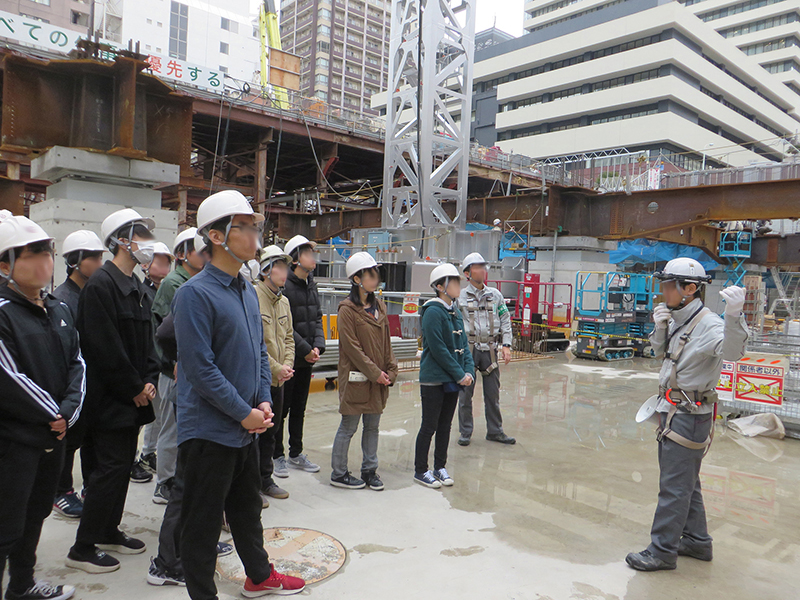
2012年4月に研究室を立ち上げ，2018年度より国士舘大学理工学部建築学系に拠点を移しました。その系譜は内藤多忠博士に端を発し，吉田享二博士，十代田三郎博士，田村恭博士，輿石直幸博士へと連なる早稲田建築を源流としています。
本研究室では，国士舘建築を設立した十代田三郎博士の代表著作「建築材料一般」，「建築構法一般」，「建築施工一般」を学問領域の3本柱に据え，天然素材や廃材の建材利用の検討や建築改修など，地球環境保全を目的とした研究を中心に取り組んでいます。古典的な建築生産研究にインテリアやインスタレーションなどの制作活動，デジタルファブリケーションや人工現実感を用いたVR建設現場による施工管理学修教材の開発など，アナログとデジタルの双方を使いこなした新しい“ものつくり”のあり方を研究しています。特にエンジニア教育として，課外活動として現場調査や施工実習を取り入れています。建設現場はいわゆる3Ｋ職場と呼ばれるもので，近年の若者には敬遠されがちな職種ですが，現場の指揮や工程の管理などプロジェクトマネジメントの基本を学ぶ場所であり，建設技術者としてのキャリアを積むための重要な学修として位置づけています。建築技術者としての本質を理解し，問題発見・解決力を高めるとともに実践力を身に付け，最後までやり遂げる精神を養います。
Research
主要な研究活動
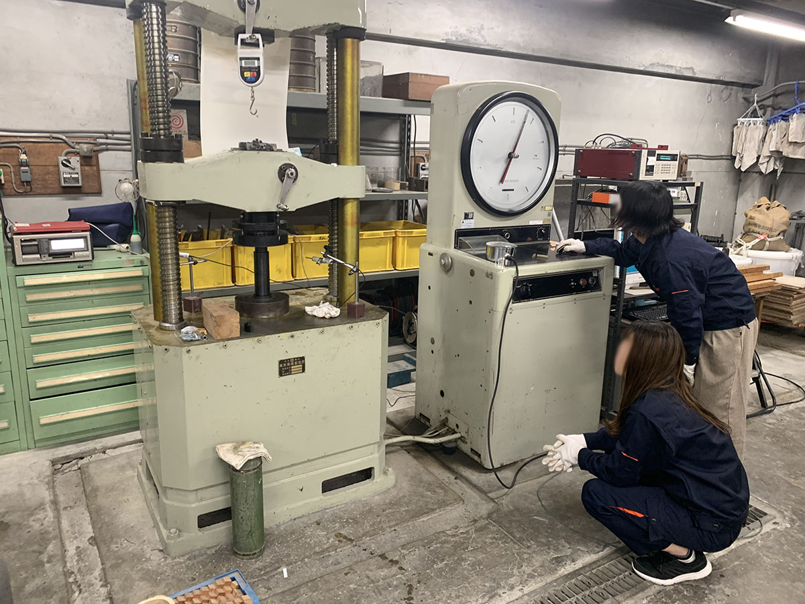
Research on the development of building materials
建築材料の開発に関する研究
地球環境保全の観点から，未利用資源の建築材料としての有効活用に関する研究を推進しています。
- 火山砕屑物（火山灰）を用いた内装吹付け建材の開発
- 3Dプリンタを用いたサステナブル建材の開発
- 脱リグニン処理による高強度圧縮木材の開発
- 新材料・新工法の建築分野への適用手法
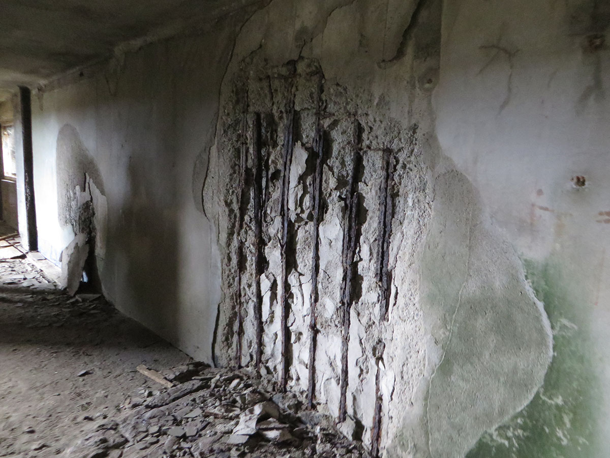
Research on Maintenance of Buildings
建築物の維持保全に関する研究
現存する建築ストックを有効活用するため，主に鉄筋コンクリート造の建築物におけるハード面での長寿命化に関する研究を推進しています。
- デジタルファブリケーションによる建築物補修技術の開発
- 既存建築物の改修設計および改修工事に関する研究
- 鉄筋コンクリートの予防保全に関する研究
- 人命保護に特化した低コスト耐震補強技術
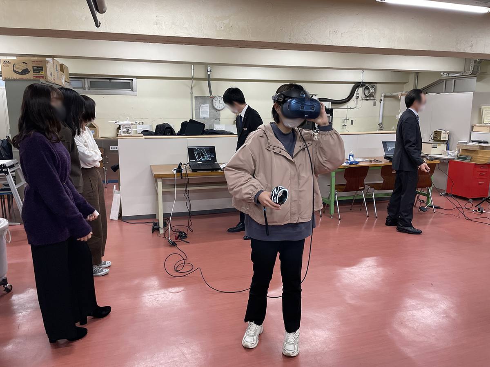
Research on Construction Educations
実践的建教育に関する研究
建築施工という経験的な仕事を大学の講義で理解するために必要な方法論について研究しています。
- 建築系学生の作業能率の実測
- 製作活動への参加が作業能率に及ぼす影響
- 建築施工教育のためのVRシミュレータの開発
- 学生主導による古民家改修計画および実施に関する研究
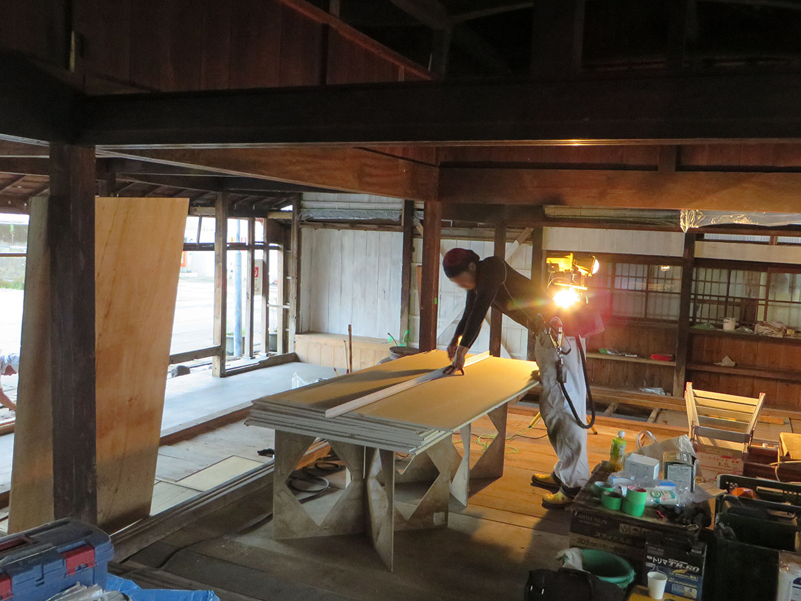
Research on the creation of interiors
インテリアの製作に関する研究
他産業の技術を駆使し，これまで建築ではなし得なかった新技術を導入したインテリア素材を実現します。
- 建設廃材を用いた家具製作に関する研究
- 静電塗工技術を用いた内装仕上げに関する研究
- 天然未利用資源の近代建築工法への適用に関する研究
- 静電塗工技術を用いた内装仕上げに関する研究
Works
研究室での制作活動
{kind=link}
{kind=link}
{kind=link}
{kind=link}
{kind=link}
{kind=link}
{kind=link}
{kind=link}
Lecture
開講科目の概要
建築材料に触れて力学的性質を実体験！
建築物の主要構造材料であるコンクリート，鉄鋼材料および木材に直接触れ，その性質や使用上の諸性能を理解するとともに，建築物の設計・施工・維持保全に対応できる知識を身に付けることを目的として各種の試験を実施します。
コンクリート，鉄鋼材料および木材を対象として，日本産業規格（JIS）に準じた試験を実施し，規格に適合する材料であることを確認します。それと同時に，実験法，機械器具の取り扱い，計算法などの理解を深めます。
● 国士舘大学理工学部建築学系 2年生春期
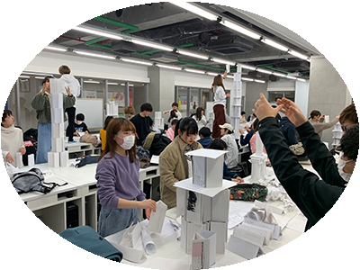
建築が施工されるまでの流れを掴む
建築工事現場で建物を構築する順序に従って個々の施工技術について概説します。施工する上で重要なポイントとなる地盤に関する事項や構造体工事についての具体的技術，手法を重点的に学びます。
また，ゼネコン・サブコンなど施工者の役割のほか現場監督の仕事についても解説します。
● 国士舘大学理工学部建築学系 2年生秋期
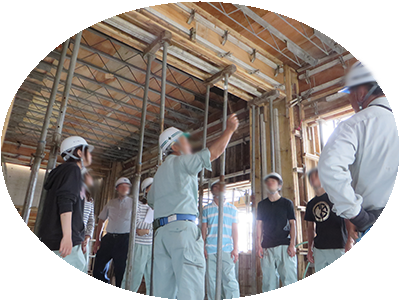
建築工事におけるQCDSEとは？
建築工事の大規模化・短工期化，要求品質の高度化・複雑化，コストの低減や環境の保全など，従来と比較して建築施工をめぐる条件は厳しくなっています。これらを管理するためには，QCDSEと呼ばれる5要素をこぼれ落とさず管理することが極めて重要です。
本講義では，Quality（品質），Cost（原価），Delivery（工程・工期），Safety（安全），Environment（環境）のそれぞれ解説します。また，主要な工種におけるQCDSEの考え方を現業と照らし合わせながら概説します。
● 国士舘大学理工学部建築学系 3年生春期
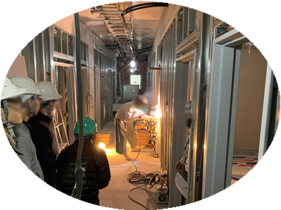
材料・施工を実践的に学ぶ
建築を造ることに注目すると，単なる知識だけでは不十分で，それらの知識をどのように実践に生かすのかが問われます。
本演習では，建築性能評価試験の実践，水平・角度・距離・三次元の測量，施工図や矩計図の作成など，建築材料施工に関する内容を実践的に学びます。
● 国士舘大学理工学部建築学系 3年生秋期
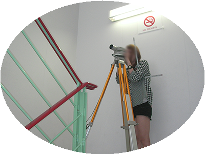
現場管理者としての材料設計・工事計画
建築物の施工に際して各種の計画が立案されます。この施工計画の良否が品質・安全・工事費・工期に多大な影響を及ぼすことになります。そこで，主要な工事の施工計画についてその内容と進め方・要点などを学習します。
また，実際の建築現場見学を実施することで，現業への理解を深めます。
● 国士舘大学理工学部建築学系 4年生春期（2025年度より再開）
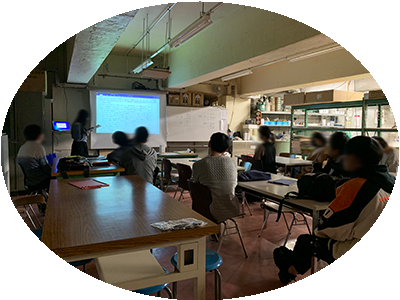
最先端の学びから未知を知る
大学や建設業で進められている新たな建築プロジェクトや要素技術について理解するとともに，これらの知識の理解を深めるための演習をおこなう。
先端技術は常に一新されるため一例となるが，他産業の新材料，分析技術や評価方法，ICT，BIM，VRなどのIT技術，ヒト・モノ・コトのマネジメントなど，多岐にわたる技術の修得を通じて，常に変わりゆく産業構造のなかで，未知のものに対応できる本質的な技術者としての能力を培います。
● 国士舘大学大学院工学研究科建設工学専攻 秋期
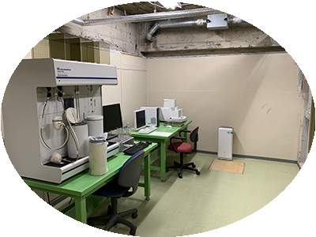
主要構造材料の特性を体験的に学ぶ
材料試験に関する知識を積極的に吸収する力を培うとともに，建築の品質管理に携わる建築家や建築技術者の役割を理解し，専門化としての倫理観を培うことを目的とします。
試験およびデータ整理などを協力して行い，結果の考察やレポート作成を通じて実践的問題を技術報告書にまとめる能力を培います。素材の特徴に関する理解を深めることにより，創造的な空間を提案する能力を培います。
● 早稲田大学創造理工学部建築学科 2年生春学期
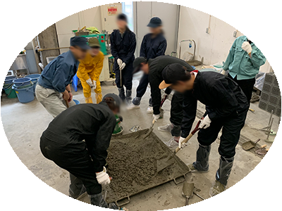
最先端の学びから未知を知る
大学や建設業で進められている新たな建築プロジェクトや要素技術について理解するとともに，これらの知識の理解を深めるための演習をおこなう。
先端技術は常に一新されるため一例となるが，他産業の新材料，分析技術や評価方法，ICT，BIM，VRなどのIT技術，ヒト・モノ・コトのマネジメントなど，多岐にわたる技術の修得を通じて，常に変わりゆく産業構造のなかで，未知のものに対応できる本質的な技術者としての能力を培います。
● 国士舘大学大学院工学研究科建設工学専攻 秋期
Contact
研究室へのお問い合わせ
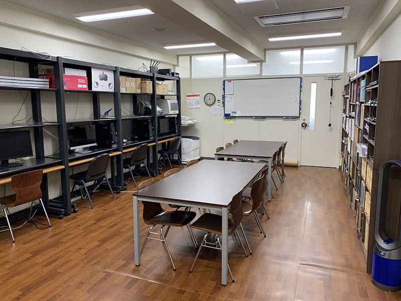
研究室にご用の方は，お手数ですがアポイントを取った上でのご来校をお願いしております。
Please come to the Laboratory after making an appointment.
- 154-8515 東京都世田谷区世田谷4-28-1
国士舘大学世田谷キャンパス 第7号館5階第732研究室 - indent(at)kokushikan.ac.jp
- 03-548l-3284（direct dialing）
初回のご連絡は，原則として電子メールにてお問い合わせいただけますようお願いいたします。ご連絡の内容に応じて折り返し連絡させていただきます。研究室運営上，不適切と判断されるご連絡にはお応えしかねます。